Next: Sawtooth wave
Up: Classical waveforms
Previous: Dissecting classical waveforms
Contents
Index
Fourier series of the elementary waveforms
In general, given a repeating waveform ![$X[n]$](img669.png) , we can evaluate its Fourier
series coefficients 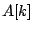 by directly evaluating the Fourier transform:
, we can evaluate its Fourier
series coefficients 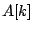 by directly evaluating the Fourier transform:
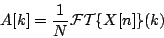
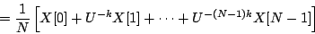
but doing this directly for sawtooth and parabolic waves will require pages of
algebra (somewhat less if we were willing resort to differential calculus).
Instead, we rely on properties of the Fourier transform to relate the transform
of a signal ![$x[n]$](img80.png) with its
first difference,
defined as 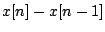. The first difference of the parabolic wave will
turn out to be a sawtooth, and that of a sawtooth will be simple enough to
evaluate directly, and thus we'll get the desired Fourier series.
with its
first difference,
defined as 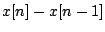. The first difference of the parabolic wave will
turn out to be a sawtooth, and that of a sawtooth will be simple enough to
evaluate directly, and thus we'll get the desired Fourier series.
In general, to evaluate the strength of the  th harmonic, we'll make the
assumption that
th harmonic, we'll make the
assumption that  is much larger than , or equivalently, that 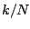 is
negligible.
is much larger than , or equivalently, that 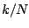 is
negligible.
We start from the Time Shift Formula for Fourier Transforms
(Page ![[*]](file:/usr/local/share/lib/latex2html/icons/crossref.png) ) setting the time shift to one sample:
) setting the time shift to one sample:
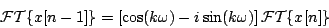
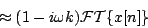
Here we're using the assumption that, because is much larger than ,
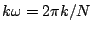 is much smaller than unity and we can make
approximations:
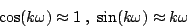
which are good to within a small error, on the order of 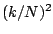.
Now we plug this result in to evaluate:
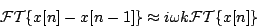
Subsections
Next: Sawtooth wave
Up: Classical waveforms
Previous: Dissecting classical waveforms
Contents
Index
Miller Puckette
2006-12-30